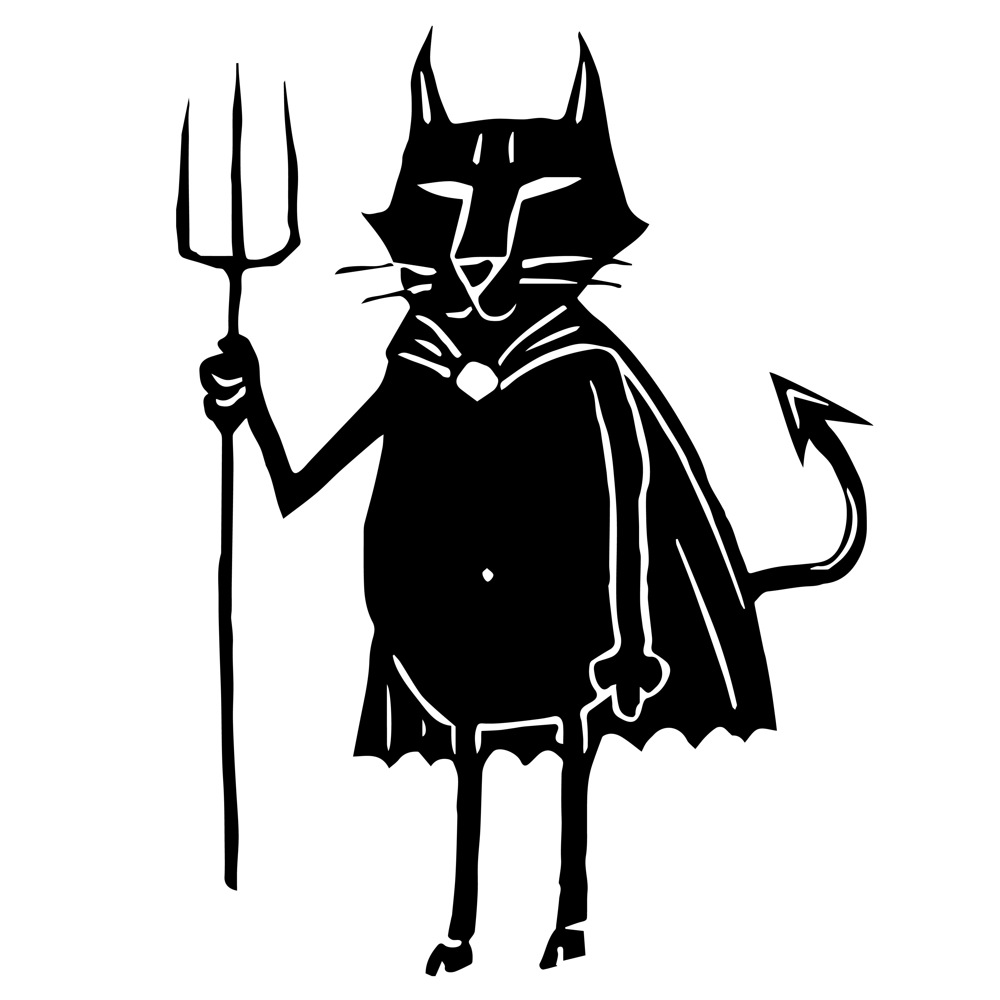

VINEGAR TOM

Instances of Female Oppression Within Europe
Sources
The Witch Persecution at Wurzburg
German elections 2017: Full Results
Malleus Maleficarum
Italy's Campaign for More Babies Called Racist, Sexist
The Lancashire Witches: A Romance of Pendle Forest by William Harrison Ainsworth
Sent Home for Not Wearing Heels, She Ignited a British Rebellion
Burqa Bans, Headscarves and Veils: a Timeline of Legislation in the West